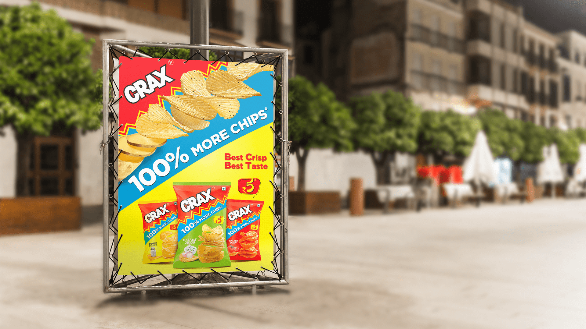
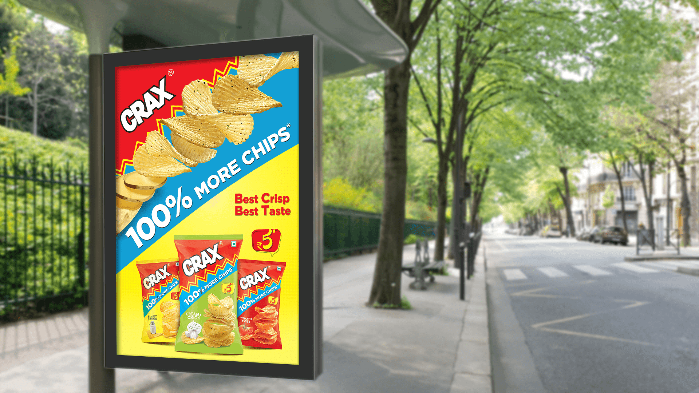

A value-led claim had to land in seconds while people moved through visually crowded streets.
← Back to workMore in the pack.
Crax · Clip-on Print
More in the pack.
More in the frame.

Project overview
A quantity proposition.
Built to feel abundant.
Crax Potato Chips presented “100% More Chips” through a bright, flavour-led range designed around crispness, taste and value.
The clip-on campaign made that promise physical. Ridged chips appear to escape the printed surface, turning pack quantity into a bold outdoor moment that can be understood before every word is read.
- Product
- Potato Chips
- Core message
- 100% More
- Expression
- Bold + Playful
- Application
- Outdoor Print
The communication challenge
Sell abundance.
Keep appetite at the centre.
The communication still needed to make the ridged chips look crisp, golden and immediately desirable.
The creative device
The chips refuse
to stay inside.
A sweeping line of ridged chips breaks beyond the expected poster plane, converting “more” from a written claim into something visible and dimensional.
Red establishes recognition, blue carries the proposition and yellow creates appetite appeal—three high-contrast blocks working at outdoor speed.
The fast-read system
See it.
Want it. Get it.
- 01
Brand first
The red pack and Crax wordmark establish recognition immediately.
- 02
More made visual
An exaggerated chip trail turns abundance into the dominant gesture.
- 03
Flavour choice
Salted, creamy onion and tomato variants give the range visible breadth.
The work in context
One burst.
Two street moments.
Each supplied visual appears once and remains uncropped, preserving the complete clip-on construction, pack range and environmental context.


The outcome
A claim you can see.
A crunch you can almost hear.
The campaign turns pack value into a kinetic product demonstration, keeping the brand, chips and flavour range clear even at a distance.
Value amplified
The physical burst makes “more” the first takeaway.
Appetite protected
Golden ridges and crisp texture keep the food desirable.
Range connected
Multiple flavours stay inside one energetic brand world.
More than a claim.A pack that cannot contain itself.
Need an outdoor idea people understand instantly?